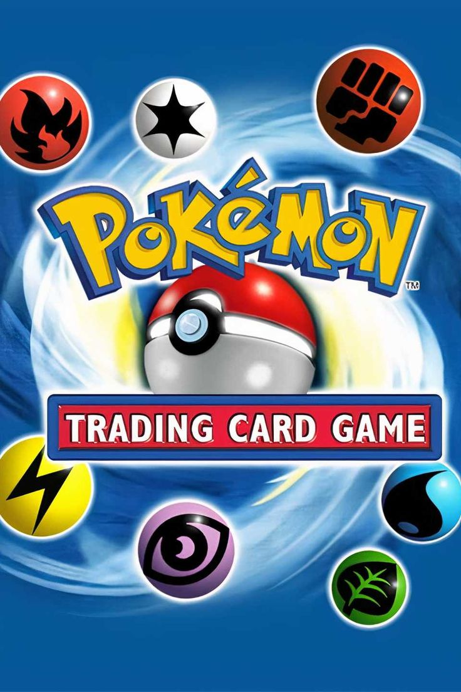

Introducción
Pokémon es una de las franquicias más grandes del mundo. Nació como un videojuego en Japón en 1996, y desde entonces ha crecido hasta convertirse en una marca global con videojuegos, series, juguetes, películas, cartas y mucho más.
Índice
- The Pokémon Company
- Videojuegos
- Series y Películas
- Juguetes y Merchandising
- Productos Cancelados y Curiosidades
1) The Pokémon Company
¿Qué es y por qué existe?
The Pokémon Company se creó para administrar la marca Pokémon a nivel mundial. Su trabajo es coordinar la producción y distribución de todo lo relacionado con la franquicia.
Pokémon es una marca que involucra a varias empresas, por ejemplo Nintendo, Game Freak y Creatures Inc.. Para evitar desorganización, se formó una empresa encargada de manejar el marketing, los productos y el crecimiento del universo Pokémon.
En resumen, la empresa se encarga de que Pokémon no sea solo un videojuego, sino un universo completo que se mantiene activo con contenido constante.

Enlace recomendado: Sitio oficial de Pokémon
2) Videojuegos
El origen de todo
Los videojuegos son el origen principal de Pokémon. Los primeros juegos fueron Pokémon Red y Pokémon Green en Japón, y después se lanzó Pokémon Red y Blue a nivel internacional.
La saga principal se basa en explorar regiones, capturar Pokémon, entrenarlos y competir en gimnasios. Con cada generación se agregan nuevas criaturas, nuevas mecánicas y nuevas historias.
Además de la saga principal, existen juegos derivados como: Pokémon Mystery Dungeon, Pokémon Ranger y Pokkén Tournament. Esto permite que Pokémon tenga variedad para distintos tipos de jugadores.

Gneraciones:
- Generación 1: Kanto
- Generación 2: Johto
- Generación 3: Hoenn
- Generación 4: Sinnoh
- Generación 5: Unova
3) Series y Películas
Pokémon en la televisión
La serie animada de Pokémon ayudó muchísimo a que la franquicia se volviera mundialmente famosa. Durante muchos años, el protagonista fue Ash Ketchum, quien viaja por distintas regiones y participa en combates.
La serie no solo muestra batallas, también presenta valores como la amistad, el esfuerzo y el trabajo en equipo. Por eso se volvió tan popular en niños y adolescentes, pero también en adultos.
Además, Pokémon tiene películas oficiales. Algunas son muy recordadas por su impacto emocional, como la primera película donde aparece Mewtwo.

Enlace recomendado: Episodios oficiales (Pokémon.com)
4) Juguetes y Merchandising
La franquicia como marca global
Pokémon no solo es un videojuego o una serie. Es también una marca enorme de productos: juguetes, peluches, ropa, accesorios, mochilas, figuras y coleccionables.
Uno de los productos más importantes es el Juego de Cartas Coleccionables (TCG). Este juego tiene torneos oficiales y millones de cartas diferentes, con diseños y rarezas especiales.
También existe el famoso Pokémon Center, que es una tienda oficial donde se venden productos exclusivos que muchas veces no llegan a tiendas comunes.
Lista ordenada (ejemplo)
Tipos de merchandising más comunes:
- Peluches
- Figuras
- Cartas TCG
- Ropa (playeras, sudaderas, gorras)
- Accesorios (llaveros, mochilas, etc.)
5) Productos Cancelados y Curiosidades
Contenido que casi existió
Como en muchas franquicias grandes, Pokémon también tiene proyectos que fueron planeados, pero nunca salieron oficialmente. Algunos se cancelaron por cambios de consola, problemas de desarrollo o decisiones comerciales.
Existen rumores y prototipos que se han encontrado con el tiempo, por ejemplo versiones beta de juegos, diseños descartados de Pokémon, o ideas que se reciclaron en generaciones posteriores.
Esto vuelve interesante la investigación, porque muestra que el mundo de Pokémon no solo es lo que vemos en los productos finales, sino también todo lo que se intentó hacer antes.

Enlace recomendado: Bulbapedia (Wiki muy completa)